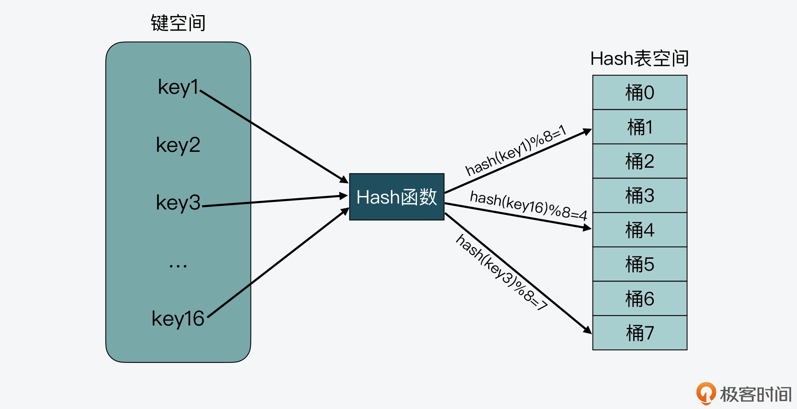
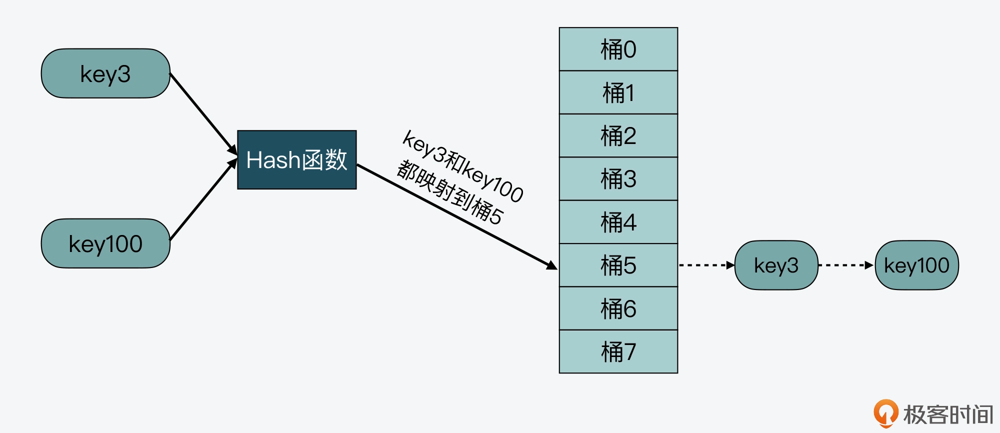
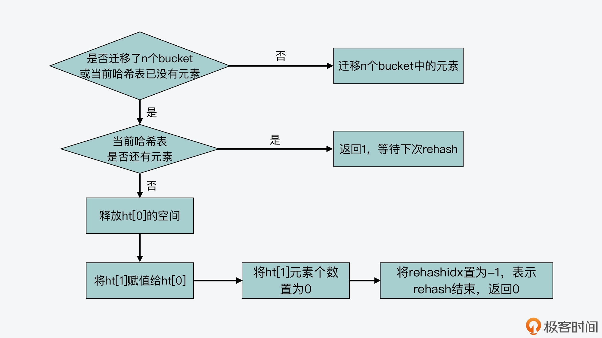

- 00 开篇词 阅读Redis源码能给你带来什么？.md
- 01 带你快速攻略Redis源码的整体架构.md
- 02 键值对中字符串的实现，用char还是结构体？.md
- 03 如何实现一个性能优异的Hash表？.md
- 04 内存友好的数据结构该如何细化设计？.md
- 05 有序集合为何能同时支持点查询和范围查询？.md
- 06 从ziplist到quicklist，再到listpack的启发.md
- 07 为什么Stream使用了Radix Tree？.md
- 08 Redis server启动后会做哪些操作？.md
- 09 Redis事件驱动框架（上）：何时使用select、poll、epoll？.md
- 10 Redis事件驱动框架（中）：Redis实现了Reactor模型吗？.md
- 11 Redis事件驱动框架（下）：Redis有哪些事件？.md
- 12 Redis真的是单线程吗？.md
- 13 Redis 6.0多IO线程的效率提高了吗？.md
- 14 从代码实现看分布式锁的原子性保证.md
- 15 为什么LRU算法原理和代码实现不一样？.md
- 16 LFU算法和其他算法相比有优势吗？.md
- 17 Lazy Free会影响缓存替换吗？.md
- 18 如何生成和解读RDB文件？.md
- 19 AOF重写（上）：触发时机与重写的影响.md
- 20 AOF重写（下）：重写时的新写操作记录在哪里？.md
- 21 主从复制：基于状态机的设计与实现.md
- 22 哨兵也和Redis实例一样初始化吗？.md
- 23 从哨兵Leader选举学习Raft协议实现（上）.md
- 24 从哨兵Leader选举学习Raft协议实现（下）.md
- 25 PubSub在主从故障切换时是如何发挥作用的？.md
- 26 从Ping-Pong消息学习Gossip协议的实现.md
- 27 从MOVED、ASK看集群节点如何处理命令？.md
- 28 Redis Cluster数据迁移会阻塞吗？.md
- 29 如何正确实现循环缓冲区？.md
- 30 如何在系统中实现延迟监控？.md
- 31 从Module的实现学习动态扩展功能.md
- 32 如何在一个系统中实现单元测试？.md
- 结束语 Redis源码阅读，让我们从新开始.md
03 如何实现一个性能优异的Hash表？
今天，我们来聊聊 Redis 中的 Hash。
我们知道，Hash 表是一种非常关键的数据结构，在计算机系统中发挥着重要作用。比如在 Memcached 中，Hash 表被用来索引数据；在数据库系统中，Hash 表被用来辅助 SQL 查询。而对于 Redis 键值数据库来说，Hash 表既是键值对中的一种值类型，同时，Redis 也使用一个全局 Hash 表来保存所有的键值对，从而既满足应用存取 Hash 结构数据需求，又能提供快速查询功能。
那么，Hash 表应用如此广泛的一个重要原因，就是从理论上来说，它能以 O(1) 的复杂度快速查询数据。Hash 表通过 Hash 函数的计算，就能定位数据在表中的位置，紧接着可以对数据进行操作，这就使得数据操作非常快速。
Hash 表这个结构也并不难理解，但是在实际应用 Hash 表时，当数据量不断增加，它的性能就经常会受到哈希冲突和 rehash 开销的影响。而这两个问题的核心，其实都来自于 Hash 表要保存的数据量，超过了当前 Hash 表能容纳的数据量。
那么要如何应对这两个问题呢？事实上，这也是在大厂面试中，面试官经常会考核的问题。所以你现在可以先想想，如果你在面试中遇到了这两个问题，你会怎么回答呢？
OK，思考先到这里，现在我来告诉你 Redis 是怎么很好地解决这两个问题的。
Redis 为我们提供了一个经典的 Hash 表实现方案。针对哈希冲突，Redis 采用了链式哈希，在不扩容哈希表的前提下，将具有相同哈希值的数据链接起来，以便这些数据在表中仍然可以被查询到；对于 rehash 开销，Redis 实现了渐进式 rehash 设计，进而缓解了 rehash 操作带来的额外开销对系统的性能影响。
所以这节课，我就带你来学习 Redis 中针对 Hash 表的设计思路和实现方法，帮助你掌握应对哈希冲突和优化 rehash 操作性能的能力，并以此支撑你在实际使用 Hash 表保存大量数据的场景中，可以实现高性能的 Hash 表。
好了，接下来，我们就先来聊聊链式哈希的设计与实现。
Redis 如何实现链式哈希？
不过，在开始学习链式哈希的设计实现之前，我们还需要明白 Redis 中 Hash 表的结构设计是啥样的，以及为何会在数据量增加时产生哈希冲突，这样也更容易帮助我们理解链式哈希应对哈希冲突的解决思路。
什么是哈希冲突？
实际上，一个最简单的 Hash 表就是一个数组，数组里的每个元素是一个哈希桶（也叫做 Bucket），第一个数组元素被编为哈希桶 0，以此类推。当一个键值对的键经过 Hash 函数计算后，再对数组元素个数取模，就能得到该键值对对应的数组元素位置，也就是第几个哈希桶。
如下图所示，key1 经过哈希计算和哈希值取模后，就对应哈希桶 1，类似的，key3 和 key16 分别对应哈希桶 7 和桶 4。

从图上我们还可以看到，需要写入 Hash 表的键空间一共有 16 个键，而 Hash 表的空间大小只有 8 个元素，这样就会导致有些键会对应到相同的哈希桶中。
我们在实际应用 Hash 表时，其实一般很难预估要保存的数据量，如果我们一开始就创建一个非常大的哈希表，当数据量较小时，就会造成空间浪费。所以，我们通常会给哈希表设定一个初始大小，而当数据量增加时，键空间的大小就会大于 Hash 表空间大小了。
也正是由于键空间会大于 Hash 表空间，这就导致在用 Hash 函数把键映射到 Hash 表空间时，不可避免地会出现不同的键被映射到数组的同一个位置上。而如果同一个位置只能保存一个键值对，就会导致 Hash 表保存的数据非常有限，这就是我们常说的哈希冲突。
比如下图中，key3 和 key100 都被映射到了 Hash 表的桶 5 中，这样，当桶 5 只能保存一个 key 时，key3 和 key100 就会有一个 key 无法保存到哈希表中了。

那么我们该如何解决哈希冲突呢？可以考虑使用以下两种解决方案：
- 第一种方案，就是我接下来要给你介绍的链式哈希。这里你需要先知道，链式哈希的链不能太长，否则会降低 Hash 表性能。
- 第二种方案，就是当链式哈希的链长达到一定长度时，我们可以使用 rehash。不过，执行 rehash 本身开销比较大，所以就需要采用我稍后会给你介绍的渐进式 rehash 设计。
这里，我们先来了解链式哈希的设计和实现。
链式哈希如何设计与实现？
所谓的链式哈希，就是用一个链表把映射到 Hash 表同一桶中的键给连接起来。下面我们就来看看 Redis 是如何实现链式哈希的，以及为何链式哈希能够帮助解决哈希冲突。
首先，我们需要了解 Redis 源码中对 Hash 表的实现。Redis 中和 Hash 表实现相关的文件主要是 dict.h 和 dict.c。其中，dict.h 文件定义了 Hash 表的结构、哈希项，以及 Hash 表的各种操作函数，而 dict.c 文件包含了 Hash 表各种操作的具体实现代码。
在 dict.h 文件中，Hash 表被定义为一个二维数组（dictEntry **table），这个数组的每个元素是一个指向哈希项（dictEntry）的指针。下面的代码展示的就是在 dict.h 文件中对 Hash 表的定义，你可以看下：
typedef struct dictht {
dictEntry **table; //二维数组
unsigned long size; //Hash表大小
unsigned long sizemask;
unsigned long used;
} dictht;
那么为了实现链式哈希， Redis 在每个 dictEntry 的结构设计中，除了包含指向键和值的指针，还包含了指向下一个哈希项的指针。如下面的代码所示，dictEntry 结构体中包含了指向另一个 dictEntry 结构的*指针 next，这就是用来实现链式哈希的：
typedef struct dictEntry {
void *key;
union {
void *val;
uint64_t u64;
int64_t s64;
double d;
} v;
struct dictEntry *next;
} dictEntry;
除了用于实现链式哈希的指针外，这里还有一个值得注意的地方，就是在 dictEntry 结构体中，键值对的值是由一个联合体 v 定义的。这个联合体 v 中包含了指向实际值的指针 *val，还包含了无符号的 64 位整数、有符号的 64 位整数，以及 double 类的值。
我之所以要提醒你注意这里，其实是为了说明，这种实现方法是一种节省内存的开发小技巧，非常值得学习。因为当值为整数或双精度浮点数时，由于其本身就是 64 位，就可以不用指针指向了，而是可以直接存在键值对的结构体中，这样就避免了再用一个指针，从而节省了内存空间。
好了，那么到这里，你应该就了解了 Redis 中链式哈希的实现，不过现在你可能还是不太明白，为什么这种链式哈希可以帮助解决哈希冲突呢？
别着急，我就拿刚才的例子来说明一下，key3 和 key100 都被映射到了 Hash 表的桶 5 中。而当使用了链式哈希，桶 5 就不会只保存 key3 或 key100，而是会用一个链表把 key3 和 key100 连接起来，如下图所示。当有更多的 key 被映射到桶 5 时，这些 key 都可以用链表串接起来，以应对哈希冲突。

这样，当我们要查询 key100 时，可以先通过哈希函数计算，得到 key100 的哈希值被映射到了桶 5 中。然后，我们再逐一比较桶 5 中串接的 key，直到查找到 key100。如此一来，我们就能在链式哈希中找到所查的哈希项了。
不过，链式哈希也存在局限性，那就是随着链表长度的增加，Hash 表在一个位置上查询哈希项的耗时就会增加，从而增加了 Hash 表的整体查询时间，这样也会导致 Hash 表的性能下降。
那么，有没有什么其他的方法可以减少对 Hash 表性能的影响呢？当然是有的，这就是接下来我要给你介绍的 rehash 的设计与实现了。
Redis 如何实现 rehash？
rehash 操作，其实就是指扩大 Hash 表空间。而 Redis 实现 rehash 的基本思路是这样的：
- 首先，Redis 准备了两个哈希表，用于 rehash 时交替保存数据。
我在前面给你介绍过，Redis 在 dict.h 文件中使用 dictht 结构体定义了 Hash 表。不过，在实际使用 Hash 表时，Redis 又在 dict.h 文件中，定义了一个 dict 结构体。这个结构体中有一个数组（ht[2]），包含了两个 Hash 表 ht[0]和 ht[1]。dict 结构体的代码定义如下所示：
typedef struct dict {
…
dictht ht[2]; //两个Hash表，交替使用，用于rehash操作
long rehashidx; //Hash表是否在进行rehash的标识，-1表示没有进行rehash
…
} dict;
- 其次，在正常服务请求阶段，所有的键值对写入哈希表 ht[0]。
- 接着，当进行 rehash 时，键值对被迁移到哈希表 ht[1]中。
- 最后，当迁移完成后，ht[0]的空间会被释放，并把 ht[1]的地址赋值给 ht[0]，ht[1]的表大小设置为 0。这样一来，又回到了正常服务请求的阶段，ht[0]接收和服务请求，ht[1]作为下一次 rehash 时的迁移表。
这里我画了一张图，以便于你理解 ht[0]和 ht[1]交替使用的过程。

好，那么在了解了 Redis 交替使用两个 Hash 表实现 rehash 的基本思路后，我们还需要明确的是：在实现 rehash 时，都需要解决哪些问题？我认为主要有以下三点：
- 什么时候触发 rehash？
- rehash 扩容扩多大？
- rehash 如何执行？
所以下面，我就带你来逐一学习 Redis 对这三个问题的代码实现，通过代码实现，你就能明晰 Redis 针对这三个问题的设计思想了。
什么时候触发 rehash？
首先要知道，Redis 用来判断是否触发 rehash 的函数是** _dictExpandIfNeeded**。所以接下来我们就先看看，_dictExpandIfNeeded 函数中进行扩容的触发条件；然后，我们再来了解下 _dictExpandIfNeeded 又是在哪些函数中被调用的。
实际上，_dictExpandIfNeeded 函数中定义了三个扩容条件。
- 条件一：ht[0]的大小为 0。
- 条件二：ht[0]承载的元素个数已经超过了 ht[0]的大小，同时 Hash 表可以进行扩容。
- 条件三：ht[0]承载的元素个数，是 ht[0]的大小的 dict_force_resize_ratio 倍，其中，dict_force_resize_ratio 的默认值是 5。
下面的代码就展示了 _dictExpandIfNeeded 函数对这三个条件的定义，你可以看下。
//如果Hash表为空，将Hash表扩为初始大小
if (d->ht[0].size == 0)
return dictExpand(d, DICT_HT_INITIAL_SIZE);
//如果Hash表承载的元素个数超过其当前大小，并且可以进行扩容，或者Hash表承载的元素个数已是当前大小的5倍
if (d->ht[0].used >= d->ht[0].size &&(dict_can_resize ||
d->ht[0].used/d->ht[0].size > dict_force_resize_ratio))
{
return dictExpand(d, d->ht[0].used*2);
}
那么，对于条件一来说，此时 Hash 表是空的，所以 Redis 就需要将 Hash 表空间设置为初始大小，而这是初始化的工作，并不属于 rehash 操作。
而条件二和三就对应了 rehash 的场景。因为在这两个条件中，都比较了 Hash 表当前承载的元素个数（d->ht[0].used）和 Hash 表当前设定的大小（d->ht[0].size），这两个值的比值一般称为负载因子（load factor）。也就是说，Redis 判断是否进行 rehash 的条件，就是看 load factor 是否大于等于 1 和是否大于 5。
实际上，当 load factor 大于 5 时，就表明 Hash 表已经过载比较严重了，需要立刻进行库扩容。而当 load factor 大于等于 1 时，Redis 还会再判断 dict_can_resize 这个变量值，查看当前是否可以进行扩容。
你可能要问了，这里的 dict_can_resize 变量值是啥呀？其实，这个变量值是在 dictEnableResize 和 dictDisableResize 两个函数中设置的，它们的作用分别是启用和禁止哈希表执行 rehash 功能，如下所示：
void dictEnableResize(void) {
dict_can_resize = 1;
}
void dictDisableResize(void) {
dict_can_resize = 0;
}
然后，这两个函数又被封装在了 updateDictResizePolicy 函数中。
updateDictResizePolicy 函数是用来启用或禁用 rehash 扩容功能的，这个函数调用 dictEnableResize 函数启用扩容功能的条件是：当前没有 RDB 子进程，并且也没有 AOF 子进程。这就对应了 Redis 没有执行 RDB 快照和没有进行 AOF 重写的场景。你可以参考下面给出的代码：
void updateDictResizePolicy(void) {
if (server.rdb_child_pid == -1 && server.aof_child_pid == -1)
dictEnableResize();
else
dictDisableResize();
}
好，到这里我们就了解了 _dictExpandIfNeeded 对 rehash 的判断触发条件，那么现在，我们再来看下 Redis 会在哪些函数中，调用 _dictExpandIfNeeded 进行判断。
首先，通过在dict.c文件中查看 _dictExpandIfNeeded 的被调用关系，我们可以发现，_dictExpandIfNeeded 是被 _dictKeyIndex 函数调用的，而 _dictKeyIndex 函数又会被 dictAddRaw 函数调用，然后 dictAddRaw 会被以下三个函数调用。
- dictAdd：用来往 Hash 表中添加一个键值对。
- dictRelace：用来往 Hash 表中添加一个键值对，或者键值对存在时，修改键值对。
- dictAddorFind：直接调用 dictAddRaw。
因此，当我们往 Redis 中写入新的键值对或是修改键值对时，Redis 都会判断下是否需要进行 rehash。这里你可以参考下面给出的示意图，其中就展示了 _dictExpandIfNeeded 被调用的关系。

好了，简而言之，Redis 中触发 rehash 操作的关键，就是 _dictExpandIfNeeded 函数和 updateDictResizePolicy 函数。_dictExpandIfNeeded 函数会根据 Hash 表的负载因子以及能否进行 rehash 的标识，判断是否进行 rehash，而 updateDictResizePolicy 函数会根据 RDB 和 AOF 的执行情况，启用或禁用 rehash。
接下来，我们继续探讨 Redis 在实现 rehash 时，要解决的第二个问题：rehash 扩容扩多大？
rehash 扩容扩多大？
在 Redis 中，rehash 对 Hash 表空间的扩容是通过调用 dictExpand 函数来完成的。dictExpand 函数的参数有两个，一个是要扩容的 Hash 表，另一个是要扩到的容量，下面的代码就展示了 dictExpand 函数的原型定义：
int dictExpand(dict *d, unsigned long size);
那么，对于一个 Hash 表来说，我们就可以根据前面提到的 _dictExpandIfNeeded 函数，来判断是否要对其进行扩容。而一旦判断要扩容，Redis 在执行 rehash 操作时，对 Hash 表扩容的思路也很简单，就是如果当前表的已用空间大小为 size，那么就将表扩容到 size2 的大小。
如下所示，当 _dictExpandIfNeeded 函数在判断了需要进行 rehash 后，就调用 dictExpand 进行扩容。这里你可以看到，rehash 的扩容大小是当前 ht[0]已使用大小的 2 倍。
dictExpand(d, d->ht[0].used*2);
而在 dictExpand 函数中，具体执行是由 _dictNextPower 函数完成的，以下代码显示的 Hash 表扩容的操作，就是从 Hash 表的初始大小（DICT_HT_INITIAL_SIZE），不停地乘以 2，直到达到目标大小。
static unsigned long _dictNextPower(unsigned long size)
{
//哈希表的初始大小
unsigned long i = DICT_HT_INITIAL_SIZE;
//如果要扩容的大小已经超过最大值，则返回最大值加1
if (size >= LONG_MAX) return LONG_MAX + 1LU;
//扩容大小没有超过最大值
while(1) {
//如果扩容大小大于等于最大值，就返回截至当前扩到的大小
if (i >= size)
return i;
//每一步扩容都在现有大小基础上乘以2
i *= 2;
}
}
好，下面我们再来看看 Redis 要解决的第三个问题，即 rehash 要如何执行？而这个问题，本质上就是 Redis 要如何实现渐进式 rehash 设计。
渐进式 rehash 如何实现？
那么这里，我们要先搞清楚一个问题，就是为什么要实现渐进式 rehash？
其实这是因为，Hash 表在执行 rehash 时，由于 Hash 表空间扩大，原本映射到某一位置的键可能会被映射到一个新的位置上，因此，很多键就需要从原来的位置拷贝到新的位置。而在键拷贝时，由于 Redis 主线程无法执行其他请求，所以键拷贝会阻塞主线程，这样就会产生 rehash 开销。
而为了降低 rehash 开销，Redis 就提出了渐进式 rehash 的方法。
简单来说，渐进式 rehash 的意思就是 Redis 并不会一次性把当前 Hash 表中的所有键，都拷贝到新位置，而是会分批拷贝，每次的键拷贝只拷贝 Hash 表中一个 bucket 中的哈希项。这样一来，每次键拷贝的时长有限，对主线程的影响也就有限了。
**那么，渐进式 rehash 在代码层面是如何实现的呢？**这里有两个关键函数：dictRehash 和 _dictRehashStep。
我们先来看 dictRehash 函数，这个函数实际执行键拷贝，它的输入参数有两个，分别是全局哈希表（即前面提到的 dict 结构体，包含了 ht[0]和 ht[1]）和需要进行键拷贝的桶数量（bucket 数量）。
dictRehash 函数的整体逻辑包括两部分：
- 首先，该函数会执行一个循环，根据要进行键拷贝的 bucket 数量 n，依次完成这些 bucket 内部所有键的迁移。当然，如果 ht[0]哈希表中的数据已经都迁移完成了，键拷贝的循环也会停止执行。
- 其次，在完成了 n 个 bucket 拷贝后，dictRehash 函数的第二部分逻辑，就是判断 ht[0]表中数据是否都已迁移完。如果都迁移完了，那么 ht[0]的空间会被释放。因为 Redis 在处理请求时，代码逻辑中都是使用 ht[0]，所以当 rehash 执行完成后，虽然数据都在 ht[1]中了，但 Redis 仍然会把 ht[1]赋值给 ht[0]，以便其他部分的代码逻辑正常使用。
- 而在 ht[1]赋值给 ht[0]后，它的大小就会被重置为 0，等待下一次 rehash。与此同时，全局哈希表中的 rehashidx 变量会被标为 -1，表示 rehash 结束了（这里的 rehashidx 变量用来表示 rehash 的进度，稍后我会给你具体解释）。
我画了下面这张图，展示了 dictRehash 的主要执行流程，你可以看下。

同时，你也可以通过下面代码，来了解 dictRehash 函数的主要执行逻辑。
int dictRehash(dict *d, int n) {
int empty_visits = n*10;
...
//主循环，根据要拷贝的bucket数量n，循环n次后停止或ht[0]中的数据迁移完停止
while(n-- && d->ht[0].used != 0) {
...
}
//判断ht[0]的数据是否迁移完成
if (d->ht[0].used == 0) {
//ht[0]迁移完后，释放ht[0]内存空间
zfree(d->ht[0].table);
//让ht[0]指向ht[1]，以便接受正常的请求
d->ht[0] = d->ht[1];
//重置ht[1]的大小为0
_dictReset(&d->ht[1]);
//设置全局哈希表的rehashidx标识为-1，表示rehash结束
d->rehashidx = -1;
//返回0，表示ht[0]中所有元素都迁移完
return 0;
}
//返回1，表示ht[0]中仍然有元素没有迁移完
return 1;
}
好，在了解了 dictRehash 函数的主体逻辑后，我们再看下渐进式 rehash 是如何按照 bucket 粒度拷贝数据的，这其实就和全局哈希表 dict 结构中的 rehashidx 变量相关了。
rehashidx 变量表示的是当前 rehash 在对哪个 bucket 做数据迁移。比如，当 rehashidx 等于 0 时，表示对 ht[0]中的第一个 bucket 进行数据迁移；当 rehashidx 等于 1 时，表示对 ht[0]中的第二个 bucket 进行数据迁移，以此类推。
而 dictRehash 函数的主循环，首先会判断 rehashidx 指向的 bucket 是否为空，如果为空，那就将 rehashidx 的值加 1，检查下一个 bucket。
**那么，有没有可能连续几个 bucket 都为空呢？**其实是有可能的，在这种情况下，渐进式 rehash 不会一直递增 rehashidx 进行检查。这是因为一旦执行了 rehash，Redis 主线程就无法处理其他请求了。
所以，渐进式 rehash 在执行时设置了一个变量 empty_visits，用来表示已经检查过的空 bucket，当检查了一定数量的空 bucket 后，这一轮的 rehash 就停止执行，转而继续处理外来请求，避免了对 Redis 性能的影响。下面的代码显示了这部分逻辑，你可以看下。
while(n-- && d->ht[0].used != 0) {
//如果当前要迁移的bucket中没有元素
while(d->ht[0].table[d->rehashidx] == NULL) {
//
d->rehashidx++;
if (--empty_visits == 0) return 1;
}
...
}
而如果 rehashidx 指向的 bucket 有数据可以迁移，那么 Redis 就会把这个 bucket 中的哈希项依次取出来，并根据 ht[1]的表空间大小，重新计算哈希项在 ht[1]中的 bucket 位置，然后把这个哈希项赋值到 ht[1]对应 bucket 中。
这样，每做完一个哈希项的迁移，ht[0]和 ht[1]用来表示承载哈希项多少的变量 used，就会分别减一和加一。当然，如果当前 rehashidx 指向的 bucket 中数据都迁移完了，rehashidx 就会递增加 1，指向下一个 bucket。下面的代码显示了这一迁移过程。
while(n-- && d->ht[0].used != 0) {
...
//获得哈希表中哈希项
de = d->ht[0].table[d->rehashidx];
//如果rehashidx指向的bucket不为空
while(de) {
uint64_t h;
//获得同一个bucket中下一个哈希项
nextde = de->next;
//根据扩容后的哈希表ht[1]大小，计算当前哈希项在扩容后哈希表中的bucket位置
h = dictHashKey(d, de->key) & d->ht[1].sizemask;
//将当前哈希项添加到扩容后的哈希表ht[1]中
de->next = d->ht[1].table[h];
d->ht[1].table[h] = de;
//减少当前哈希表的哈希项个数
d->ht[0].used--;
//增加扩容后哈希表的哈希项个数
d->ht[1].used++;
//指向下一个哈希项
de = nextde;
}
//如果当前bucket中已经没有哈希项了，将该bucket置为NULL
d->ht[0].table[d->rehashidx] = NULL;
//将rehash加1，下一次将迁移下一个bucket中的元素
d->rehashidx++;
}
好了，到这里，我们就已经基本了解了 dictRehash 函数的全部逻辑。
现在我们知道，dictRehash 函数本身是按照 bucket 粒度执行哈希项迁移的，它内部执行的 bucket 迁移个数，主要由传入的循环次数变量 n 来决定。但凡 Redis 要进行 rehash 操作，最终都会调用 dictRehash 函数。
接下来，我们来学习和渐进式 rehash 相关的第二个关键函数**_dictRehashStep**，这个函数实现了每次只对一个 bucket 执行 rehash。
从 Redis 的源码中我们可以看到，一共会有 5 个函数通过调用 _dictRehashStep 函数，进而调用 dictRehash 函数，来执行 rehash，它们分别是：dictAddRaw，dictGenericDelete，dictFind，dictGetRandomKey，dictGetSomeKeys。
其中，dictAddRaw 和 dictGenericDelete 函数，分别对应了往 Redis 中增加和删除键值对，而后三个函数则对应了在 Redis 中进行查询操作。下图展示了这些函数间的调用关系：

但你要注意，不管是增删查哪种操作，这 5 个函数调用的 _dictRehashStep 函数，给 dictRehash 传入的循环次数变量 n 的值都为 1，下面的代码就显示了这一传参的情况。
static void _dictRehashStep(dict *d) {
//给dictRehash传入的循环次数参数为1，表明每迁移完一个bucket ，就执行正常操作
if (d->iterators == 0) dictRehash(d,1);
}
这样一来，每次迁移完一个 bucket，Hash 表就会执行正常的增删查请求操作，这就是在代码层面实现渐进式 rehash 的方法。
小结
实现一个高性能的 Hash 表不仅是 Redis 的需求，也是很多计算机系统开发过程中的重要目标。而要想实现一个性能优异的 Hash 表，就需要重点解决哈希冲突和 rehash 开销这两个问题。
今天这节课，我带你学习了 Redis 中 Hash 表的结构设计、链式哈希方法的实现，以及渐进式 rehash 方法的设计实现。Redis 中 Hash 表的结构设计很特别，它的每个哈希项都包含了一个指针，用于实现链式哈希。同时，Redis 在全局哈希表中还包含了两个 Hash 表，这种设计思路也是为了在实现 rehash 时，帮助数据从一个表迁移到另一个表。
此外，Redis 实现的渐进式 rehash 是一个用于 Hash 表扩容的通用方法，非常值得我们学习。这个设计方法的关键是每次仅迁移有限个数的 bucket，避免一次性迁移给所有 bucket 带来的性能影响。当你掌握了渐进式 rehash 这个设计思想和实现方法，你就可以把它应用到自己的 Hash 表实现场景中。
每课一问
Hash 函数会影响 Hash 表的查询效率及哈希冲突情况，那么，你能从 Redis 的源码中，找到 Hash 表使用的是哪一种 Hash 函数吗？
欢迎在留言区分享你的答案，如果觉得有收获，也欢迎你把今天的内容分享给更多的朋友。
© 2019 - 2023 Liangliang Lee. Powered by Vert.x and hexo-theme-book.